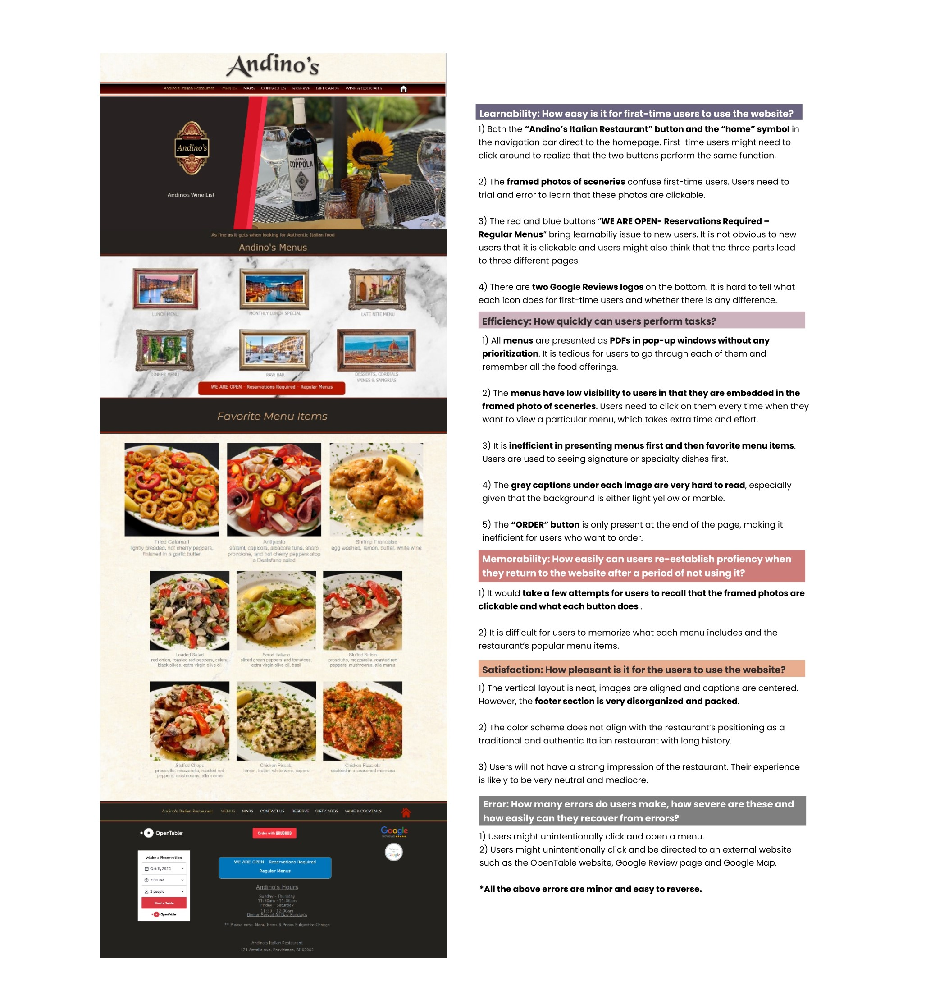
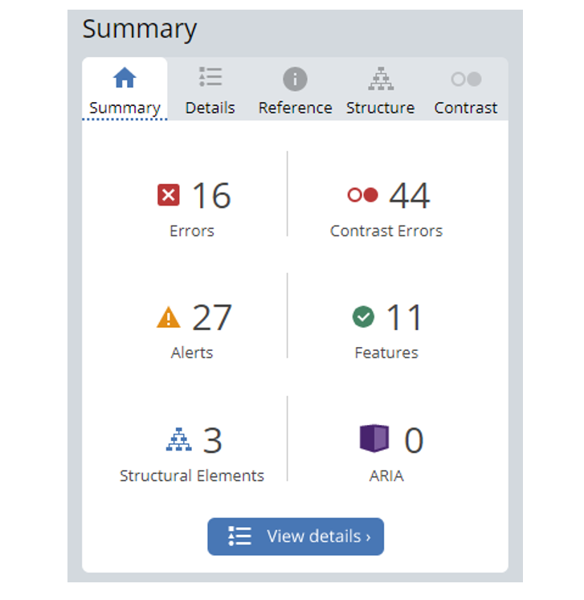
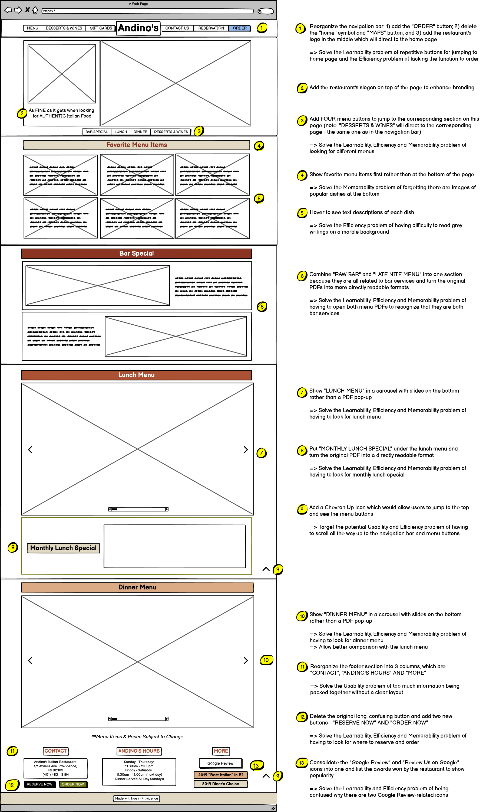
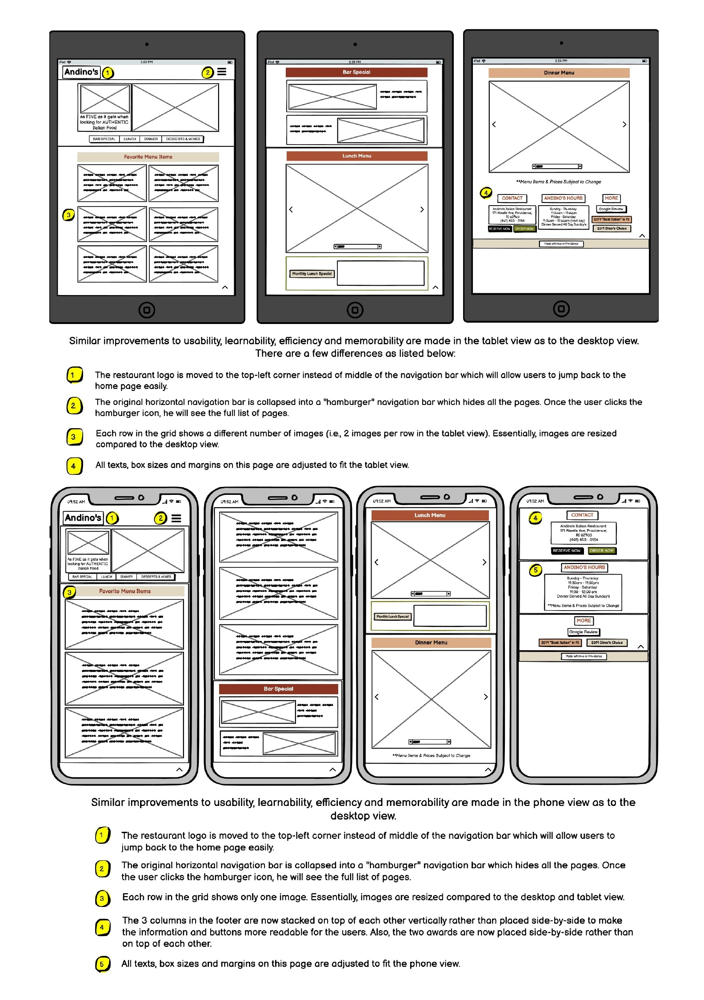
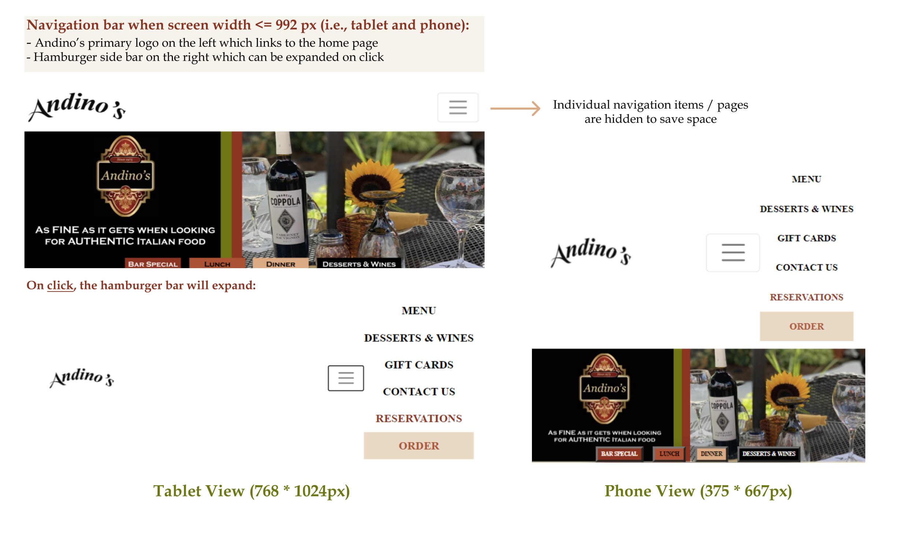
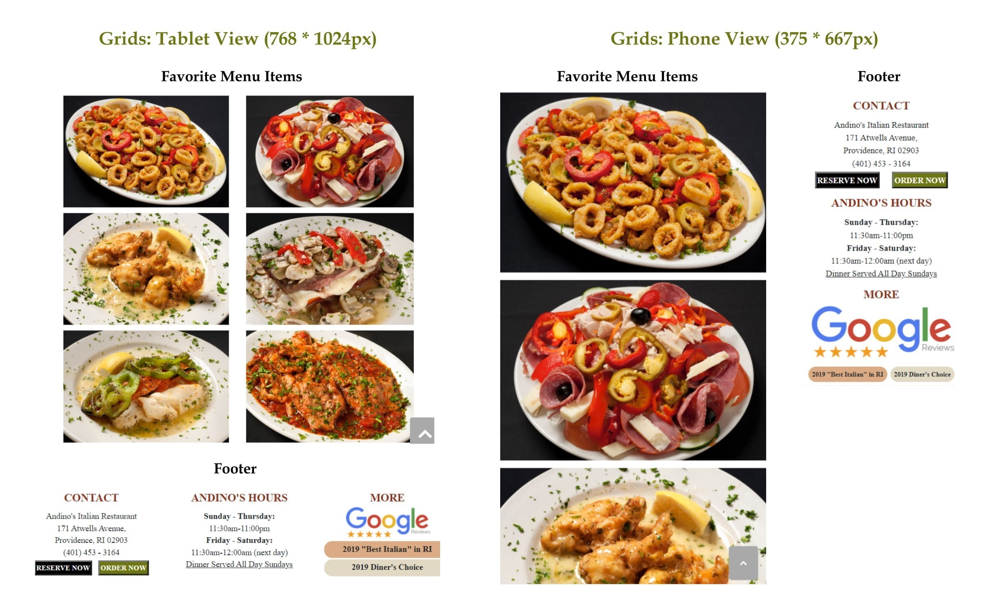
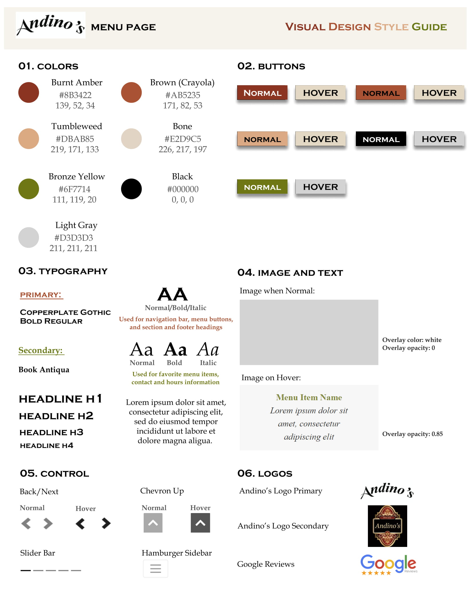

Redesign
Andino's is one of my favorite Italian restaurants in Providence. It provides authentic and traditional Italian cuisine that attracts many local residents. However, despite its delicious food and cozy dining environment, Andino's menu page is extremely hard to navigate.
Menu page is one of the most important pages for a restaurant since many people make dining choices based on the dishes and drinks offered by the restaurant. I decided to redesign Andino's menu page by applying UI design principles and making usability and responsiveness improvements. Let the reimaging of Andino's begin!
Before going into prototyping directly, I examined the original menu page and evaluated its usability with respect to learnability, efficiency, memorability, satisfaction and error. For users of Andino's menu page, their goal is to see what menu items, foods and drnks are offered by Andino's and decide whether they want to dine at the restaurant. Currently, the page allows users to view six different menus in PDF formats.
Overall, it is difficult for users to figure out and remember what is clickable on this page. Users need to intentionally look for information and the design of the website seems outdated.

Accessibility Concerns
There are no significant accessbility concerns found, except for:
- The low contrast between text and background colors is the biggest accessibility issue, with 44 related errors identified.
- There are a few redundant links and text on the website which raise alerts.
- Some of the images are missing alternative text and language is not specified for the page.
I then use JAWS Screen Reading Software to further assess the menu page. The screen reader is able to recognize a few headings but the design is not very friendly to the screen reader due to the lack of alternative text for images and written information.

Redesign Goals
All my design choices are made based on the following goals:
- More intuitive and readable presentation of different menus
- Addition of a modern touch to the traditional feel of the website
- Reorganization of buttons to make them stand out and more self-explanatory in terms of what they do
- Prioritize menus to help users find the desired information easier
- Utilization of text hierarchy, typography and colors to enhance eligibility and user satisfaction
- Implementation of responsiveness to provide similar positive user experiences across different screen sizes
Low-Fidelity Wireframes: Responsiveness and Improvements
Desktop View💻

Tablet and Phone View 📱

High-Fidelity Prototypes: One Step Further🐾
Using Figma, I created three high-fidelity prototypes for Andino's Menu Page in Desktop(left), Tablet(middle) and Phone(right) View. Feel free to zoom in and take a closer look at my prototypes!
Annotations (click "next/prev" or the slide bar to see all):
Elements that are Different in Tablet and Phone Views:


Final Redesigned Menu Page (HERE)
Click HERE to see the redesigned menu page for Andino's!
I have tested my redesigned website with Chrome Responsive Tool and confirmed that it works with any screen size on any device. My redesigned website also works with any font size, including 150% font size on the tablet screen. All font and image sizes, paddings and margins adjust accordingly to fit different screen size, and the same level of eligiblity of information is preserved. I tried WebAIM WAVE on different screen sizes and there are much fewer accessbility concerns compared to the original website. The only error is due to the responsiveness design of the navigation bar where the Andino's logo is in the middle when the screen width is at least 992px and on the leftmost otherwise. Thus, there is a hidden logo in the top-left corner. The only contrast error is due to the "LUNCH" menu button. After playing around with the transparency and contrast of the background color yet getting unsatisfactory outcomes, I decided to keep it as it is to match the color scheme.
Visual Design Style Guide

Reflections
Redesigning the menu page for my favorite restaurant is absolutely a fun experience for me. The preliminary diagnosis of usability issues and reflection of the users' goals help me to develop a clear game plan before prototyping. Keeping Andino's self-positioning, history and mission to its customers in mind, I proceeded to the creation of low-fidelity wireframes and then high-fidelity prototypes. Usability and responsiveness considerations mainly drove my design choices and shape my final redesign.
*All menus, images and restaurant logos are from the original website: Andino's Menu Page. The original website is referenced and redesigned for nonprofit educational purpose and all work presented is not of commercial nature.